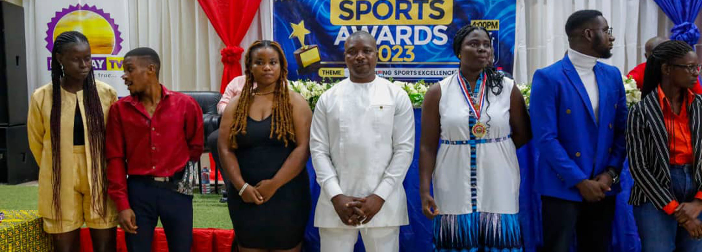
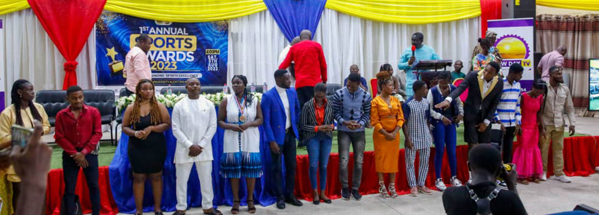
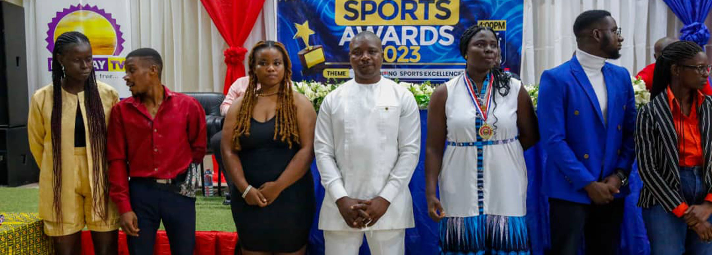
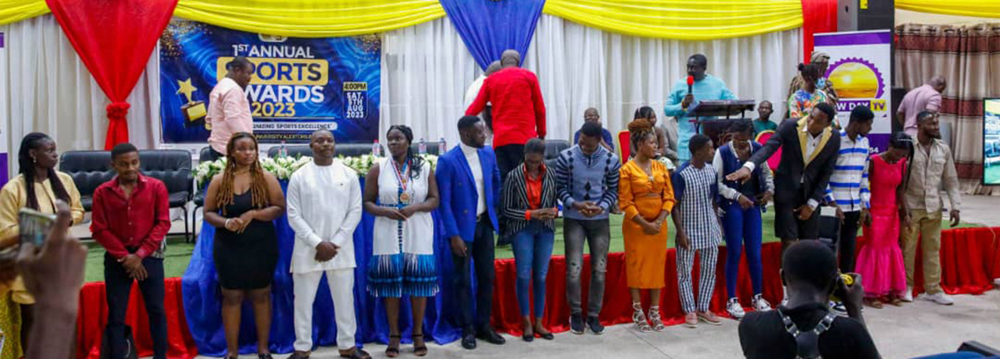

Takoradi Technical University Sports Awards is a riveting journey through a night of unparalleled celebration and achievement. The opening ceremony set the tone with its spectacular display, ushering in an atmosphere of anticipation and excitement. Inspirational keynote speeches resonated with attendees, creating a collective sense of motivation and pride. The award presentations were the heart of the evening, each one a poignant tribute to the exceptional athletes, teams, and coaches who have left an indelible mark on TTU sports.The award presentations were the heart of the evening, each one a poignant tribute to the exceptional athletes, teams, and coaches who have left an indelible mark on TTU sports. Behind-the-scenes stories unveiled the dedication and coordination that made the event a success, while exclusive interviews provided a personal insight into the thoughts and emotions of the award recipients. The event's vibrant energy was further amplified by captivating performances and the enthusiastic reactions of the audience.
Closing the ceremony with reflections and gratitude, the event highlight reel serves as a dynamic testament to the triumphs, unity, and sheer joy that define the sports community at Takoradi Technical University.